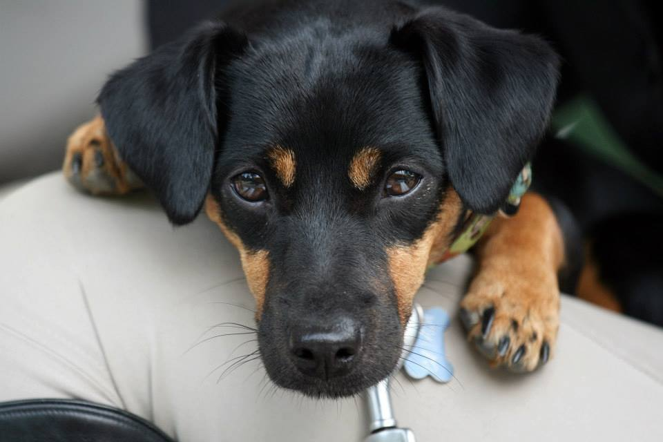
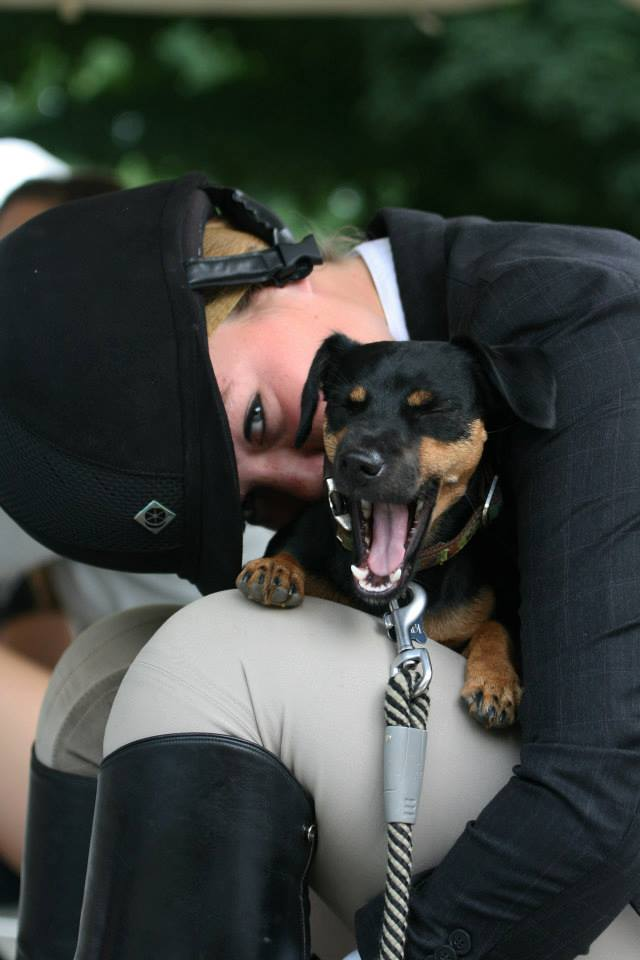
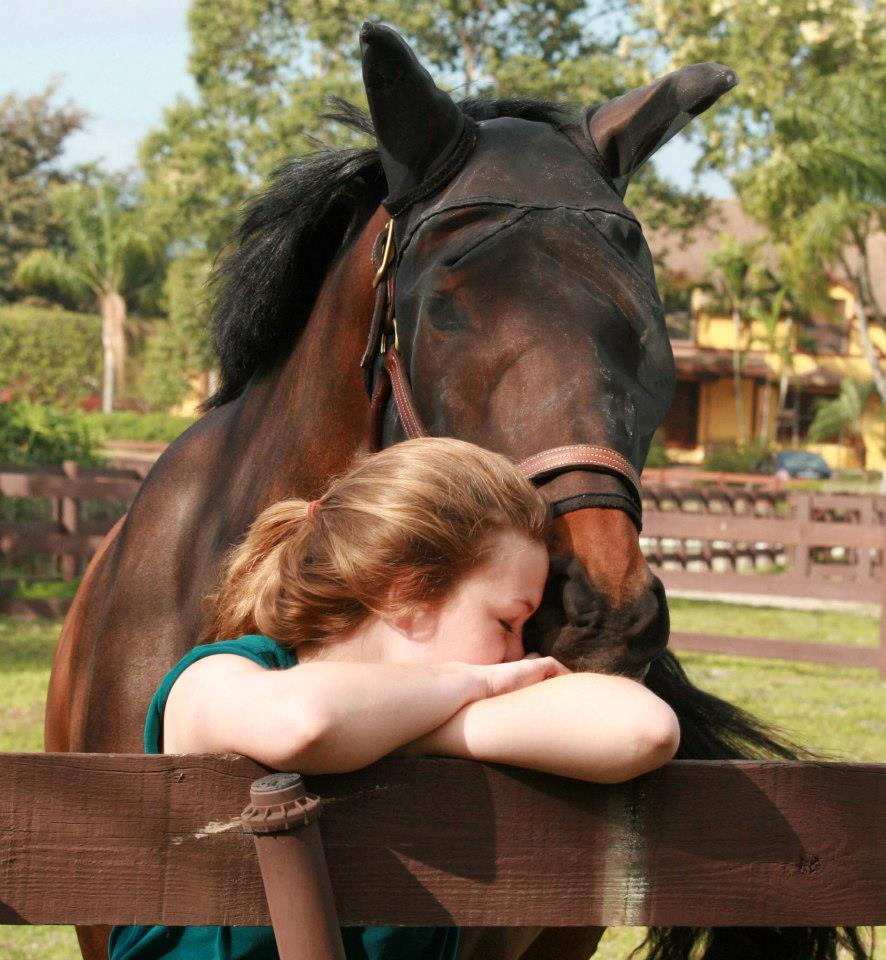
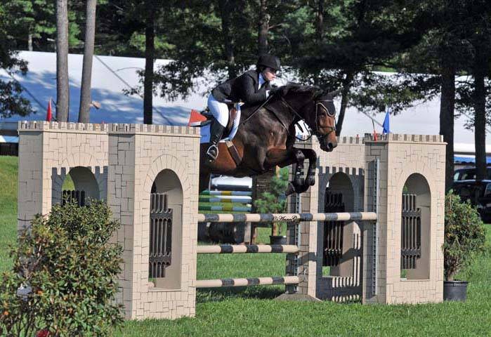
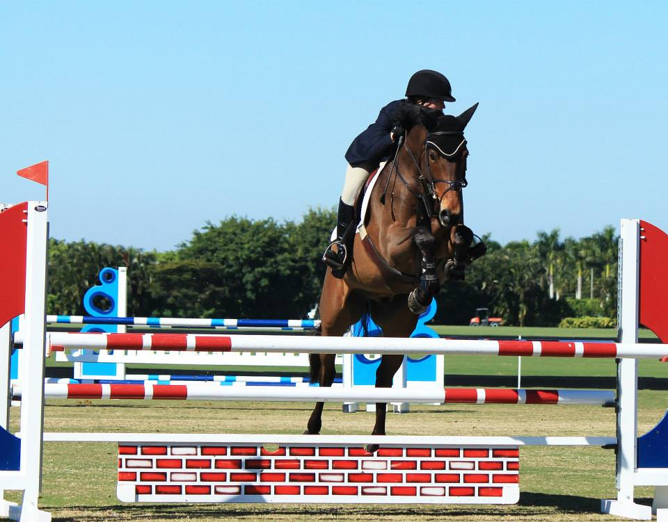
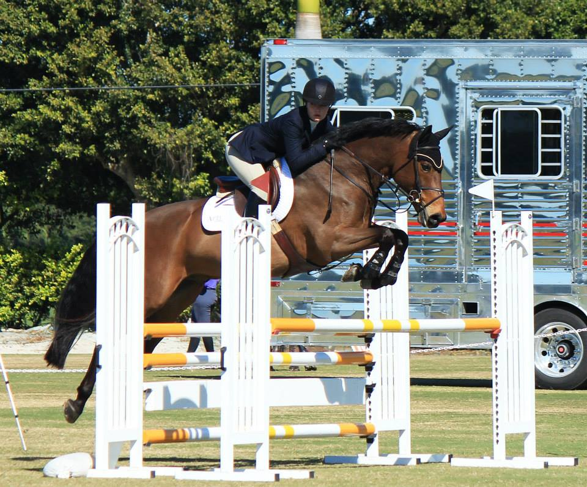
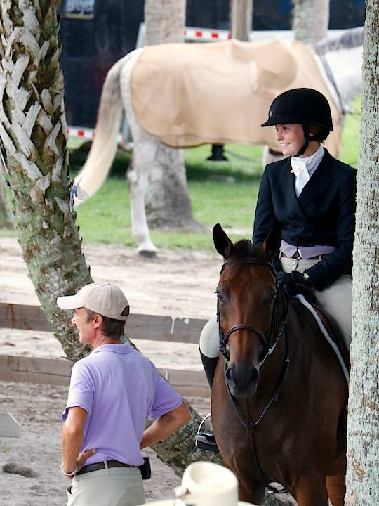
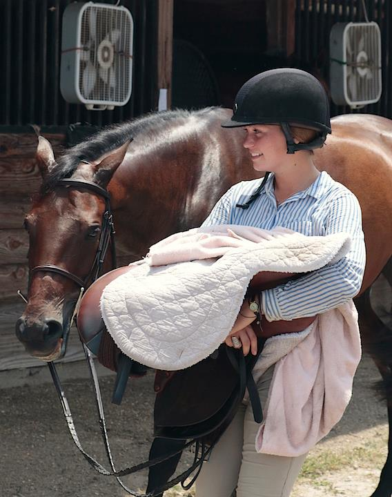
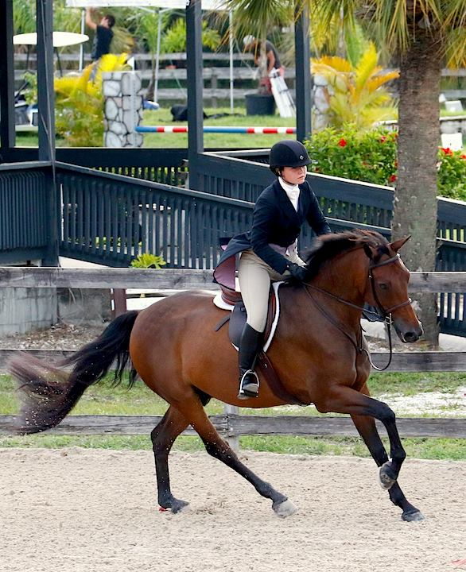

About
Better policies through better policymaking ecosystems.
When I encountered the behavioral dimensions of economics and international relations, I was drawn to the potential of research to update existing models to more closely reflect human behavior and, in turn, improve policy design and impact. I pursued work in behavioral research labs to study individual- and interpersonal-level mechanisms, with the goal of later testing and adapting these insights for applied field settings.
Alongside my professional experience, I've completed graduate-level coursework on the applications of research in policy and am currently one of 20 selected participants in the 2026 Max Bell School of Public Policy Evaluation Capacity Case Challenge.
I'm looking to continue this work through graduate study or applied policy roles focused on improving both policies and the processes that shape them.
Outside of the local library, you can find me exploring the outdoors or supporting community gardens and local nonprofits.
Please feel free to reach out — piper.oren@gmail.com
Experience
- Lead research operations across the project lifecycle, overseeing study design, data collection, IRB coordination, and lab management
- Manage lab administration and research infrastructure to support faculty productivity and scale experimental capacity
- Co-designed faculty and doctoral research projects and restructured lab processes to expand research capacity and operational efficiency
- Supported multi-study research initiatives, contributing to study design, data collection, and analysis
- Selected for the World Team to support behavioral research projects in the U.S., Netherlands, and Kenya focused on health and savings interventions
- Supported experimental study design and resolved protocol and participant management challenges to ensure smooth lab implementation
What's Not on My Resume
The experiences that don't make it to my final resume or CV, but that I want to share.
Photos
A few snapshots from a previous life. Featured are my dog Bambi, horse Abba (Absolute Gold), and trainer Holly Mitten.








